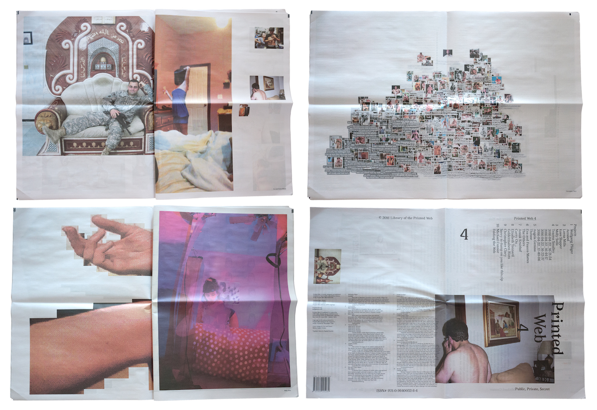
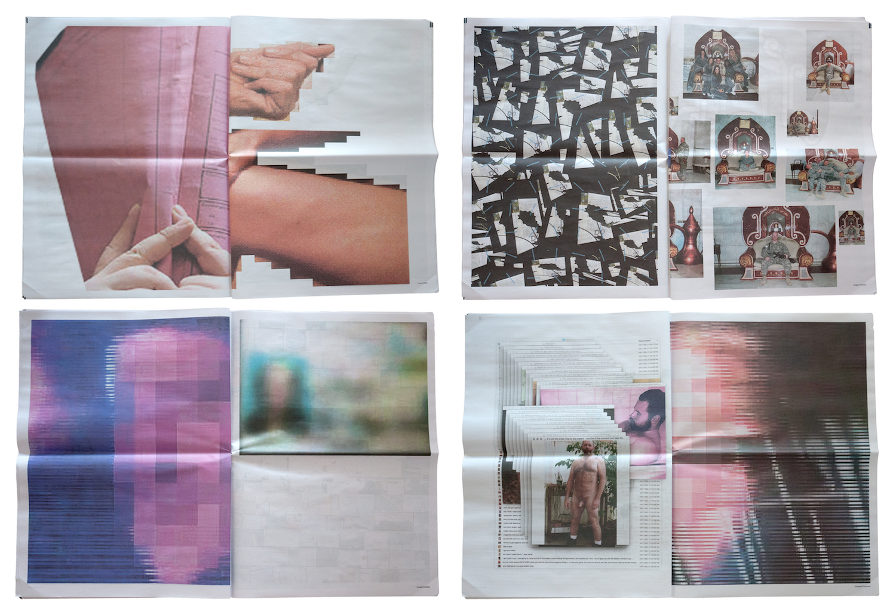
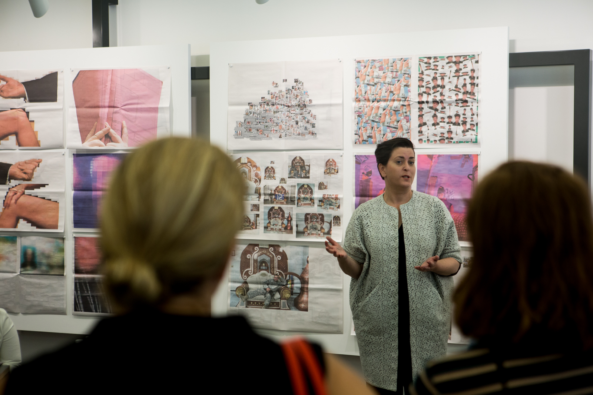
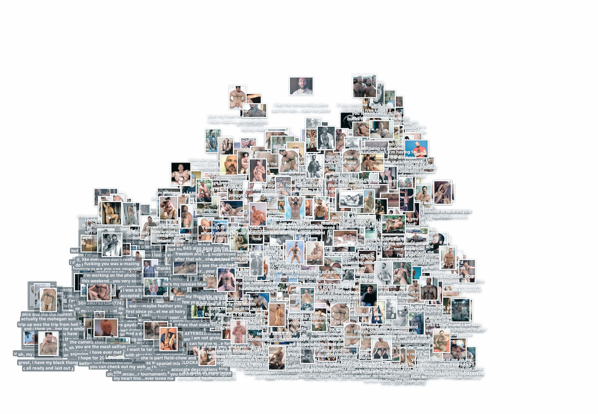

Printed Web 4: Public, Private, Secret (2016)

40 pages
Print-on-demand newsprint (first printing: 300)
14.75 in. x 20.5 in.
Commissioned by Charlotte Cotton, curator of “Public, Private, Secret” at International Center of Photography, NYC
Co-published by ICP and Paul Soulellis, Library of the Printed Web
Printed by Newspaper Club
ISBN 978-0-9840052-8-4
A copy of Printed Web 4 is in the artists’ books collection at MoMA Library in New York, included as part of MoMA’s acquisition of Library of the Printed Web in 2017.


Contributors—Wolfgang Plöger, Lorna Mills, Molly Soda, Travess Smalley, Angela Genusa, Eva and Franco Mattes, Anouk Kruithof, Elisabeth Tonnard, Christopher Clary, Michael Connor


Download PDF
“Urgent Archives” by Paul Soulellis, featuring Printed Web 4, commissioned by Charlotte Cotton for Public, Private, Secret: On Photography and the Configuration of the Self, published by Aperture
“Folding the Web” by Michael Connor, commissioned for Printed Web 4